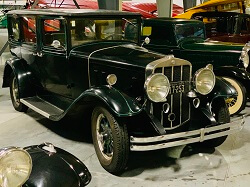

Franklin Collection
Franklin Automobile Collection
1909 Franklin Model D
Year: 1909
Donor: Bruce & Barbara Weir
Engine: 4 Cyl.
Transmission: Manual (3 speed)
Number of Doors: open and 2
Curb Weight in Lbs: 2,000
WAAAM’s Franklin Model D is a good representation of early vehicle technology. It has no electric starter, no generator,and no battery. For lighting it relies kerosene burning lamps on the two sides and single rear light as well as two carbide fueled lights for the headlights. Franklin Model Ds had a four-cylinder, air-cooled inline engine. It also has a right hand drive.
1929 Franklin Model 135 Sedan
Year: 1929
Donor: Jack Woolf
Engine: 6 Cyl.
Transmission: Manual (3 speed)
Number of Doors: 4
Curb Weight in Lbs: approx. 3,900
In the automotive world some cars are found pristine in barns, other cars are found rusty and broken down in thickets of plants, other cars you can only find pieces of - bit by bit at a time. This 1929 Franklin is the latter case. It took many years of tracking down pieces at swap meets and other sales to find what was missing off of a very cannibalized frame way back in the 1950s or so. After decades of determination it payed off with one very beautiful air-cooled automobile. (The radiator shell is fake.) This Franklin has been on many shows and tours all around the Pacific Northwest since the 1980s.